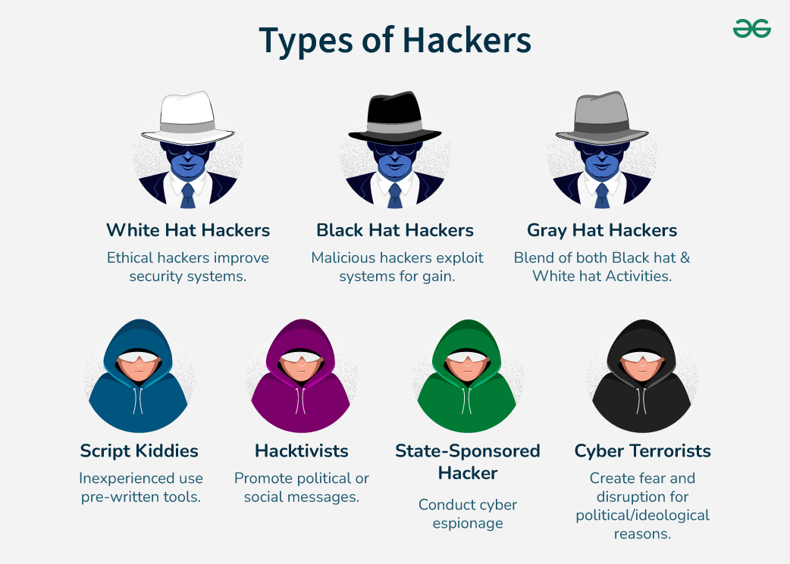

Not all hackers are the same. The hacking world is made up of various categories based on individuals' intentions and methods. These are commonly referred to by "hat" colours.
White hat hackers are the good guys. They are cybersecurity professionals employed to test and strengthen organisations and governments' defenses against cybercriminals and threats. They are referred to as ethical hackers, and are always given permission before testing a system.
Black hat hackers are the criminals in the hacking world. They break into organisations and individuals' systems without permission. These hackers steal data and money, cause major damage, and operate mainly for personal gain.
Grey hat hackers sit in the "grey space" in between, as their intentions are neither strictly good nor bad. They are not given permission to access systems, and so are technically illegal, but their intentions are not harmful.
Types of Hackers Portrayal:

Source: https://media.geeksforgeeks.org/wp-content/uploads/20240726165423/Types-of-Hackers.png
Script kiddies are unskilled individuals who use pre-written hacking tools and scripts without understanding how they work. They are generally not considered serious hackers but can still cause damage, often in fact due to their inexperience.
Hacktivists use hacking as a form of protest, largely politically. They are digital activists, who, like "Anonymous" (the most well-known hacktivist group), hack governments, corporations, and organisations they oppose.
These are hackers hired or supported by governments to spy on, destroy, or disrupt other nations. They are some of the best hackers in the world, and are major threats to global security.
These are people who use hacking as a form of terror. While hacktivists use hacking to make a point, cyber terrorists use hacking to terrorise. Their main targets are commonly infrastructure such as power plants, water plants, hospitals, and financial institutions. A successful cyber terrorist attack has the ability to harm entire nations, making them one of the most feared aspects of modern warfare today.